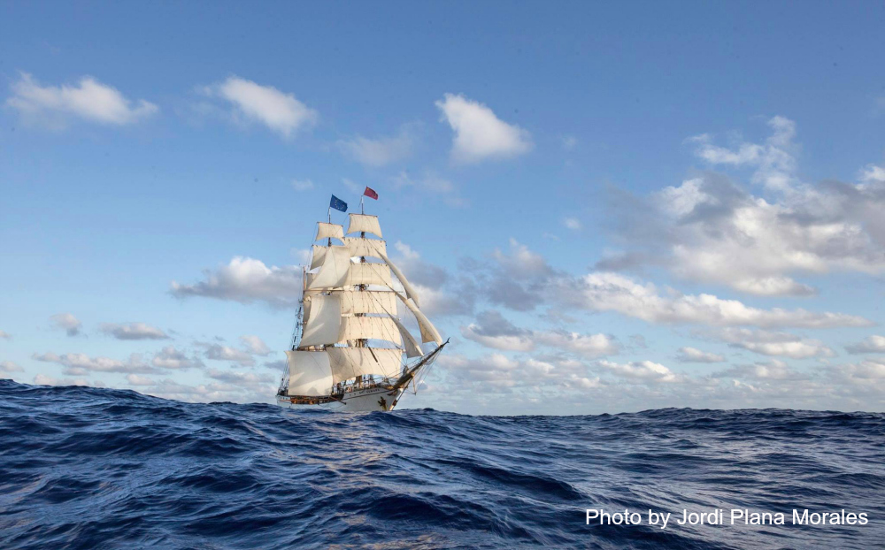

The sea voyage

MANY a day and night my bark stood ready laden;
Waiting fav'ring winds, I sat with true friends round me,
Pledging me to patience and to courage,
In the haven.
And they spoke thus with impatience twofold:
"Gladly pray we for thy rapid passage,
Gladly for thy happy voyage; fortune
In the distant world is waiting for thee,
In our arms thoult find thy prize, and love too,
When returning."
And when morning came, arose an uproar,
And the sailors' joyous shouts awoke us;
All was stirring, all was living, moving,
Bent on sailing with the first kind zephyr.
And the sails soon in the breeze are swelling,
And the sun with fiery love invites us;
Fill'd the sails are, clouds on high are floating,
On the shore each friend exulting raises
Songs of hope, in giddy joy expecting
Joy the voyage through, as on the morn of sailing,
And the earliest starry nights so radiant.
But by God-sent changing winds ere long he's driven
Sideways from the course he had intended,
And he feigns as though he would surrender,
While he gently striveth to outwit them,
To his goal, e'en when thus press'd, still faithful.
But from out the damp grey distance rising,
Softly now the storm proclaims its advent,
Presseth down each bird upon the waters,
Presseth down the throbbing hearts of mortals.
And it cometh. At its stubborn fury,
Wisely ev'ry sail the seaman striketh;
With the anguish-laden ball are sporting
Wind and water.
And on yonder shore are gather'd standing,
Friends and lovers, trembling for the bold one:
"Why, alas, remain'd he here not with us!
Ah, the tempest! Cast away by fortune!
Must the good one perish in this fashion?
Might not he perchance.... Ye great immortals!"
Yet he, like a man, stands by his rudder;
With the bark are sporting wind and water,
Wind and water sport not with his bosom:
On the fierce deep looks he, as a master,
In his gods, or shipwreck'd, or safe landed,
Trusting ever.
- Johann Wolfgang von Goethe